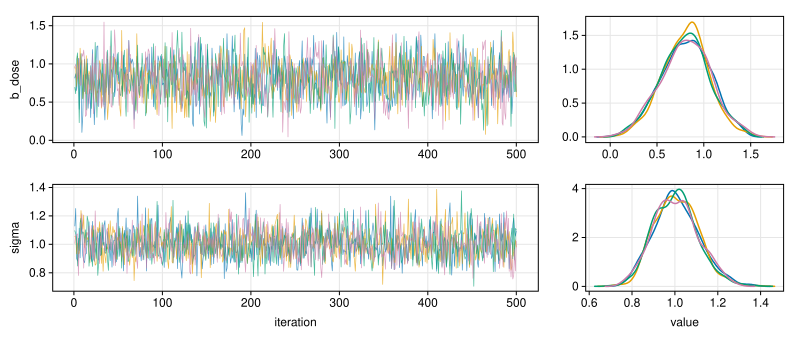
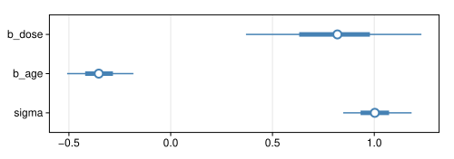
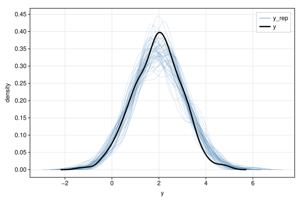
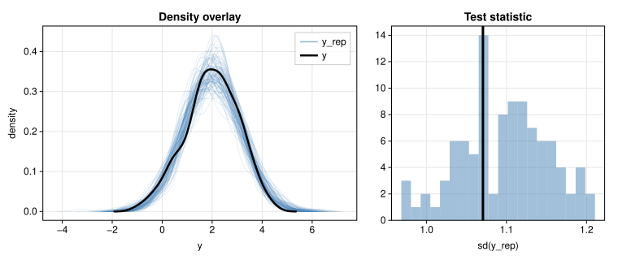
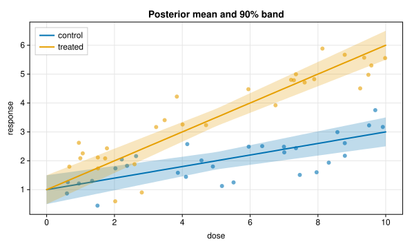
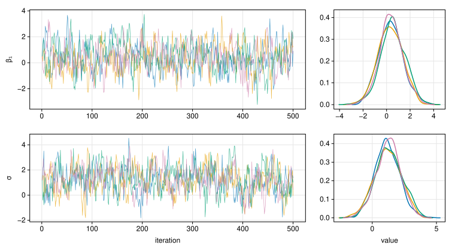
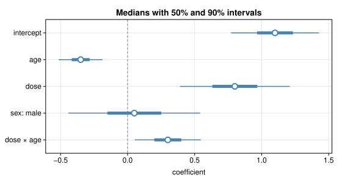

PracticalBayesPlot.jl


A very lightweight, pure Julia plotting package that targets the small set of plots typically used in the Bayesian workflow: posterior predictive checks, effect plots, trace plots, residuals and interval plots. It has no dependencies and draws figures as SVG.
It loads in about 40 ms. A first figure, such as a posterior predictive check with 50 overlaid densities and a histogram, compiles almost nothing because the package's code is cached at precompile time.
The design is taken from Makie: the function names (Figure, Axis, lines!, hist!, ...), the fig[i, j] layout, the keyword names and the default colour cycle all follow Makie, so Makie plotting code ports with few changes. Credit for that design goes to the Makie developers; this package reimplements a small part of it. Future work is planned to integrate the two, so that a Figure or Axis made with this package can be placed in a larger, more feature-rich Makie figure.
Usage
The package exports nothing, because almost all of its names are also exported by Makie. Load it under a short name and qualify calls:
import PracticalBayesPlot as PBPThis works the same whether or not Makie is loaded in the session.
Bayesian workflow plots
Each of the common plots takes one call:
| Function | Draws |
|---|---|
PBP.traceplot(draws) | trace and per-chain density of each parameter |
PBP.densities(draws) | posterior density of each parameter, by chain or pooled |
PBP.intervals(draws) | 50% and 90% intervals and medians, as bayesplot's mcmc_intervals |
PBP.ppcheck(y, yrep; type) | posterior predictive checks: :dens_overlay, :ecdf_overlay, :hist, :stat, :bars |
draws can be a chain from FlexiChains (what Turing.jl returns) or MCMCChains, any Tables.jl table such as a DataFrame (one column per parameter, plus an optional chain column), a NamedTuple of iterations × chains matrices, or an iterations × parameters × chains array. PBP.todraws reads them, and other packages can add methods to it for their own types.
import PracticalBayesPlot as PBP
using Random
rng = Xoshiro(1)
post = (; b_dose = 0.8 .+ 0.25 .* randn(rng, 500, 4),
b_age = -0.35 .+ 0.1 .* randn(rng, 500, 4),
sigma = exp.(0.1 .* randn(rng, 500, 4)))
fig = PBP.traceplot(post; variables = [:b_dose, :sigma])
fig = PBP.intervals(post)
y = 2 .+ randn(rng, 200) # observed data
yrep = 2 .+ 1.1 .* randn(rng, 50, 200) # 50 replicated data sets, one per row
fig = PBP.ppcheck(y, yrep)
Each returns a Figure. PBP.intervals!(ax, draws) and PBP.ppcheck!(ax, y, yrep) draw into an existing axis instead.
Building figures from the primitives
The plots above are built from Makie-style primitives, which also compose into figures of your own. The examples run in order in one session; the data are simulated stand-ins for model output.
A posterior predictive check by hand
import PracticalBayesPlot as PBP
using Random
rng = Xoshiro(1)
y = 2 .+ randn(rng, 200) # observed data
yrep = 2 .+ 1.1 .* randn(rng, 100, 200) # 100 replicated data sets, one per row
fig = PBP.Figure(; size = (760, 320))
ax = PBP.Axis(fig[1, 1]; xlabel = "y", ylabel = "density", title = "Density overlay")
for s in 1:100
PBP.density!(ax, view(yrep, s, :); color = (:steelblue, 0.15), linewidth = 0.8,
label = s == 1 ? "y_rep" : "")
end
PBP.density!(ax, y; color = :black, linewidth = 2.5, label = "y")
PBP.axislegend(ax)
sd(v) = sqrt(sum(abs2, v .- sum(v) / length(v)) / (length(v) - 1))
ax2 = PBP.Axis(fig[1, 2]; xlabel = "sd(y_rep)", title = "Test statistic")
PBP.hist!(ax2, [sd(view(yrep, s, :)) for s in 1:100]; bins = 20, color = (:steelblue, 0.5))
PBP.vlines!(ax2, sd(y); color = :black, linewidth = 3)
PBP.colsize!(fig, 1, PBP.Relative(0.6))
PBP.save("ppcheck.svg", fig)
Fitted lines with credible bands
x = range(0, 10; length = 50)
fig = PBP.Figure(; size = (600, 360))
ax = PBP.Axis(fig[1, 1]; xlabel = "dose", ylabel = "response",
title = "Posterior mean and 90% band")
for (i, (group, slope)) in enumerate((("control", 0.2), ("treated", 0.5)))
xs = 10 .* rand(rng, 30)
PBP.scatter!(ax, xs, 1 .+ slope .* xs .+ 0.6 .* randn(rng, 30);
color = (i, 0.6), markersize = 6)
mu = 1 .+ slope .* x
half = 0.3 .+ 0.04 .* abs.(x .- 5)
PBP.band!(ax, x, mu .- half, mu .+ half; color = (i, 0.25))
PBP.lines!(ax, x, mu; color = i, linewidth = 2, label = group)
end
PBP.axislegend(ax; position = :lt)
Trace plots by hand
function ar1(rng, n, mu, phi) # stands in for one MCMC chain
x = fill(mu, n)
for t in 2:n
x[t] = mu + phi * (x[t-1] - mu) + sqrt(1 - phi^2) * randn(rng)
end
return x
end
fig = PBP.Figure(; size = (760, 420))
for (row, (name, mu)) in enumerate((("β₁", 0.5), ("σ", 1.2)))
trace = PBP.Axis(fig[row, 1]; ylabel = name, xlabel = row == 2 ? "iteration" : "")
dens = PBP.Axis(fig[row, 2]; xlabel = row == 2 ? "value" : "")
for chain in 1:4
draws = ar1(rng, 500, mu, 0.7)
PBP.lines!(trace, draws; color = (chain, 0.7), linewidth = 0.7)
PBP.density!(dens, draws; color = chain)
end
end
PBP.colsize!(fig, 1, PBP.Relative(0.7))
Coefficient intervals by hand
terms = ["dose × age", "sex: male", "dose", "age", "intercept"]
est = [0.3, 0.05, 0.8, -0.35, 1.1]
se = [0.15, 0.3, 0.25, 0.1, 0.2]
fig = PBP.Figure(; size = (560, 300))
ax = PBP.Axis(fig[1, 1]; xlabel = "coefficient", title = "Medians with 50% and 90% intervals")
PBP.vlines!(ax, 0; color = :gray, linestyle = :dash)
PBP.rangebars!(ax, terms, est .- 1.64se, est .+ 1.64se; direction = :x, color = :steelblue)
PBP.rangebars!(ax, terms, est .- 0.67se, est .+ 0.67se; direction = :x, color = :steelblue, linewidth = 5)
PBP.scatter!(ax, est, terms; color = :white, strokecolor = :steelblue, strokewidth = 2, markersize = 9)
Strings as positions become categories, so terms labels the y axis.
One-call forms
One-call forms make a figure with a single axis:
fig = PBP.hist(randn(1000); bins = 40, axis = (; xlabel = "x"))
PBP.lines!(PBP.current_axis(), [-2, 2], [0, 100])Showing figures
- VS Code, Jupyter and Pluto show a
Figureinline (as SVG). - In a terminal REPL, displaying a
Figureopens it in the browser.PBP.preview(fig)does the same from anywhere. PBP.save("fig.svg", fig)writes SVG;PBP.save("fig.html", fig)writes a page holding the SVG. For PNG or PDF, convert the SVG (for example withrsvg-convertor Inkscape).PBP.svg(fig)returns the SVG as a string.
What the primitives draw
Names below are written without the PBP. prefix.
| Function | Draws |
|---|---|
lines!(ax, x, y) | lines; NaN breaks a line |
stairs!(ax, x, y; step) | step lines (:pre, :post, :center) |
scatter!(ax, x, y) | markers: :circle, :rect, :diamond, :utriangle, :dtriangle |
band!(ax, x, lower, upper) | filled band, e.g. a credible band |
barplot!(ax, x, heights) | bars; x may be strings |
hist!(ax, data; bins, normalization) | histogram (:none, :pdf, :probability, :density) |
density!(ax, data) | Gaussian kernel density estimate |
ecdfplot!(ax, data) | empirical CDF |
rangebars!(ax, pos, low, high; direction) | intervals, vertical or horizontal |
hlines!(ax, ys), vlines!(ax, xs) | reference lines across the axis |
text!(ax, x, y; text) | text at data coordinates |
axislegend(ax, title; position) | legend of the plots given a label |
Each has a one-call form without ! (except the reference lines, text and legend), and a form without ax that draws into current_axis().
Common keywords: color, alpha, linewidth, linestyle (:solid, :dash, :dot, :dashdot), label. A colour is a name (:steelblue, "red"), a hex string, an (r, g, b) tuple with values in 0–1, an integer index into wong_colors(), or (colour, alpha). Without color, plots take the next colour of the axis's cycle (Wong's colour-blind-safe palette, in Makie's order).
Axis attributes (keywords to Axis, or set later as ax.xlabel = "..."): title, xlabel, ylabel, xticks, yticks (positions, or (positions, labels)), limits, xgridvisible, ygridvisible. Also xlims!, ylims!, limits!. Layout: Axis(fig[i, j]), with ranges to span cells (fig[1:2, 1]); colsize! and rowsize! set relative sizes.
PBP.kde(x, grid) is the density estimate density! uses, for code that needs the numbers.
Gallery
examples/pbr_plots.jl draws the figures PracticalBayesianRegression makes (every pp_check type, plot_effects with and without groups and for categorical predictors, trace_plot, residual_plot) plus densities and intervals, from simulated arrays. Write them to examples/out/ with
julia --project=examples examples/pbr_plots.jlNot supported
Log axes, colour maps and heatmaps, 3-d plots, and raster output. They are outside the plots the package is for.